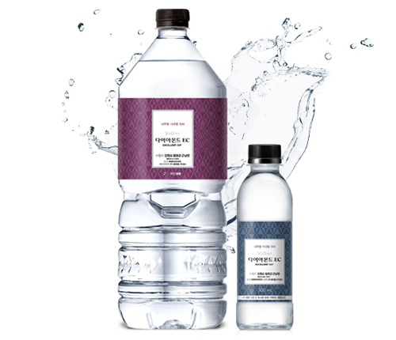
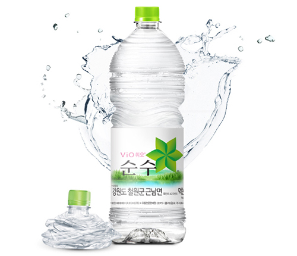
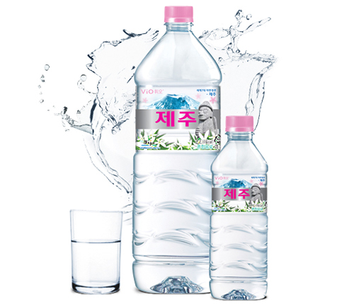
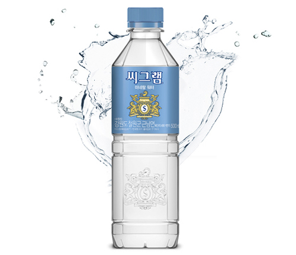

워터
엄격한 수질관리기준을 통과하여, 믿고 마실 수 있는 먹는샘물 브랜드입니다.
엄격한 품질 관리로 깨끗하고 순수한 물을 그대로 담은
품격있는 생수 휘오 다이아몬드 EC, 에코 보틀 휘오 순수,
제주도 청정수 휘오 제주, 프리미엄 워터 씨그램 미네랄 워터등이 있으며
환경까지 생각한 리사이클 패키지 개발에 힘쓰고 있습니다.
-

품격 있는 생수
휘오 다이아몬드 EC
최고의 세공을 거친 최상품 다이아몬드를
다이아몬드 Excellent Cut이라 부른다는 것을 아시나요?
청정한 철원 지하에서 자연의 세공을 받아 탄생한 품격 있는 생수,
다이아몬드 EC를 만나보세요!-
- · 제품명
- 휘오 다이아몬드 EC
-
- · 제품종류
- 먹는샘물
-
- · 용량
- - PET 2L / 500ml / 300ml
-
-

환경까지 생각한 에코-보틀 워터!
휘오 순수
· 대한민국 최 북단 청정 철원의 깨끗한 샘물
· 세계적인 코카-콜라사의 엄격한 관리로 더 믿을 수 있는 품질
· 초경량 에코 보틀을 적용하여 환경까지 생각한 친환경 먹는샘물-
- · 제품명
- 휘오 순수
-
- · 제품종류
- 먹는샘물
-
- · 용량
- - PET 2L / 500ml
-
-

제주에서 새로 찾은 맛있는 화산암반수
휘오 제주
휘오 제주는 유네스코 지정 세계 자연 유산 제주도의
화산암반에서 정화된 청정수를 담아
더욱 깨끗하고 칼륨 등 필수 미네랄이 들어있어
맛과 건강을 동시에 챙길 수 있는 젊은 감각의 새로운 음료입니다.-
- · 제품명
- 휘오 제주
-
- · 제품종류
- 혼합음료
-
- · 용량
- - PET 2L / 500ml
-
-

150년 전통 씨그램의 프리미엄 워터
씨그램 미네랄 워터
150년 전통의 브랜드 ‘씨그램’ 의 믿고 마실 수 있는 프리미엄워터.
부드럽고, 청량한 물맛.
먹는샘물도 씨그램-
- · 제품명
- 씨그램 미네랄 워터
-
- · 제품종류
- 먹는샘물
-
- · 용량
- - PET 500ml
-